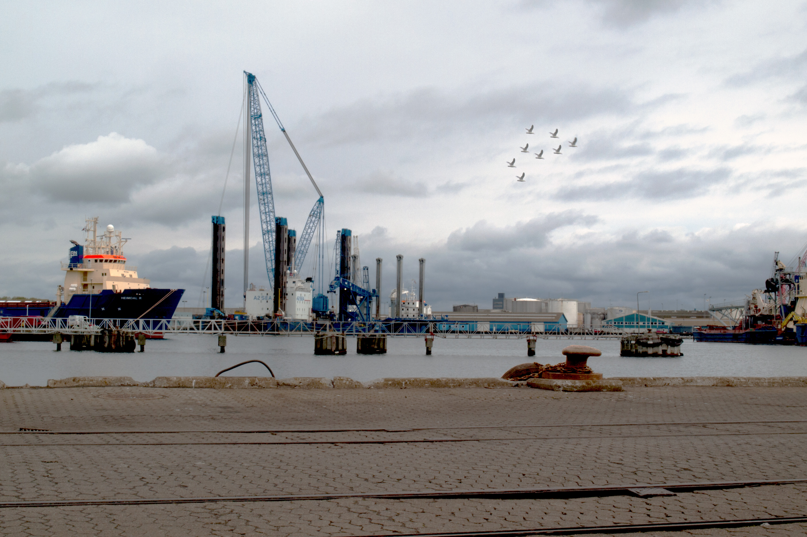
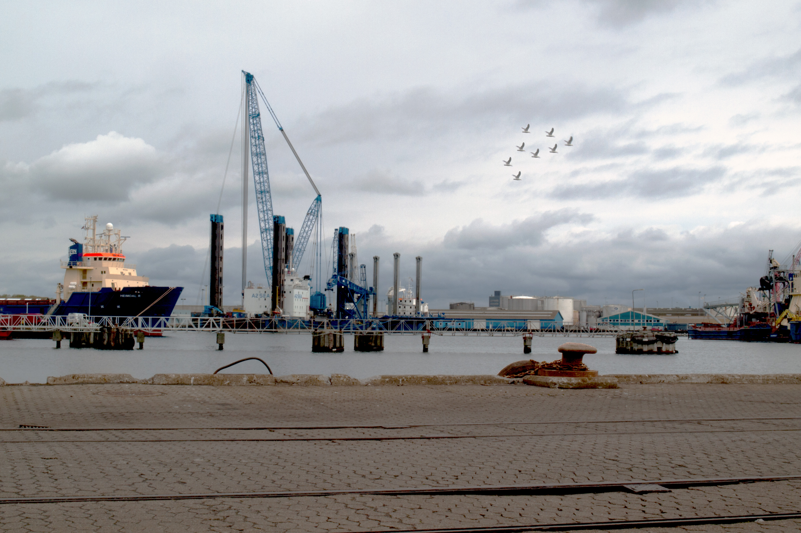

Design og Foto projekter
Photoshop
Min søn på ryggen af et næsehorn
Familien var på besøg i Ree Park Zoo i vinteren 2016 (julemarked). Her fik jeg taget et billede af min søn, hvor han leger på en stenskulptur af et næsehorn
Herefter fandt jeg et passende baggrundbillede, der kunne få det til at se ud som om næsehornet og min søn befandt sig i vild natur.
Jeg brugte Photoshop CC 2017 til at lave det færdige billede ovenfor. Det originale billede ses her og er først behandlet i Camera Raw. Funktioner jeg bl.a. brugt var:
- Puppet Warp
- Quick selection tool
- Layer Masks
- Diverse reguleringer af lys og farve
Produktfotografering
Billeder til din webshop?
Jeg tager meget gerne billede af dine produkter. Billederne bliver taget, så dine produkter ser flotte ud og passer ind i det webshop design vi bliver enige om. Her kan du se et par eksempler.
Camera Raw og Lightroom
Fotografering i Omegnen
Jeg har været ude og tage RAW billeder i Grenå og har efterfølgende tilpasset dem i Camera Raw eller Lightroom CC. Flere af billederne er bagefter behandlet i Photoshop CC. Funktioner jeg bl.a. brugt var:
- Fotografering med fokus på:
- Dybte - elementer i for-, mellem- og baggrund
- Perspektiv
- Brug af lys og skygge
- Tredjedels reglen mv.
- HDR billed (se øverste billede)
- Balance i billedet
- Linier i billedet
- Regulering af lys, skygge osv
- Ændringer i detajler mv.
- Quick selection tool
- Fremhævelse af visse elementer
- Kopiering af elementer til andre dele af billedet (se nederste billede)
Det blev taget mange landskabsbilleder denne dag.
 

Photoshop
Ridderdrømme til børneværelset
Min søn er vild med Ridderuniverset. Til Fastalavn var han klædt ud i ridderdragt med skjold og sværd. Desværre fik jeg kun nogle lidt uskarpe billeder, men jeg har alligevel brugt et af dem til at lave dette billede med ham som ridder i forskellige positioner.
Jeg har igen brugt Photoshop CC 2017 til at lave billedet.
- Transform rotate
- Liquify
- Puppet Warp
- Quick selection tool
- Layer Masks